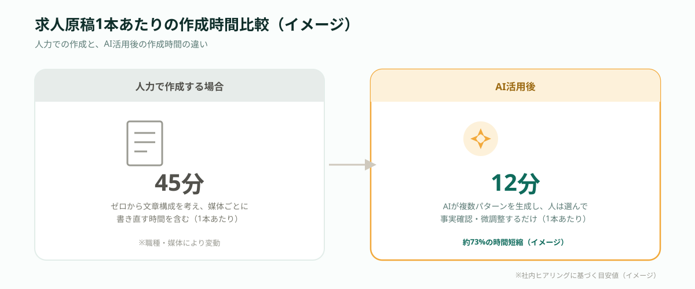
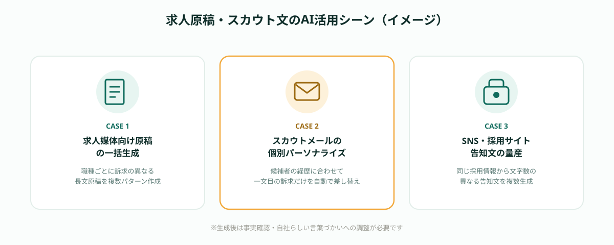

求人原稿やスカウト文の作成は、採用担当者にとって「重要だが時間がかかる」業務の代表例です。募集職種が増えるほど、原稿の本数も比例して増え、1件あたり30分〜1時間かけて書いていると、採用担当の業務時間の多くがここに吸い取られてしまうケースが少なくありません。
この記事では、求人原稿・スカウト文の作成をAIで自動化する仕組みと、導入前に整理すべきポイント、実際にスポット発注で進める際の3ステップを解説します。
求人原稿・スカウト文の作成が「毎回ゼロから」になってしまう理由
「テンプレートを作れば効率化できるのでは」と思われがちですが、実際には職種・部署・媒体ごとに訴求すべきポイントが異なるため、汎用テンプレートだけでは使い物にならないという壁にぶつかる企業が多くあります。エンジニア採用とバックオフィス採用では響くキーワードが違い、転職サイトとダイレクトスカウトでも文章の型がまったく異なるためです。
さらに、採用担当者が原稿作成のたびに「前回の原稿を探して直す」という非効率な運用になっていることも珍しくありません。過去の知見が個人のフォルダやメールの中に散らばっており、再利用できる仕組みになっていない点が、求人原稿作成が属人化・長時間化する大きな要因になっています。
AIで求人原稿・スカウト文を自動生成する仕組み
AIによる求人原稿・スカウト文の自動生成は、職種情報・必須条件・自社の魅力ポイントなどをインプットとして渡し、媒体やターゲットに応じた文章を生成AIが組み立てる仕組みが基本です。求人サイト用の長文原稿、ダイレクトスカウト用の短文メッセージ、SNS用の告知文など、用途別に複数パターンを同時に出力できる点が、人力での作成と大きく異なります。

もちろんAIが出力した文章をそのまま使えるわけではなく、事実確認や自社らしい言葉づかいへの調整は必要です。ただし「ゼロから文章を考える」のではなく「AIが出した案を選び、整える」作業に変わるため、1本あたりの作成時間を大幅に短縮できる点が最大のメリットです。
導入前に整理すべき3つのポイント
AI自動生成の効果を最大化するには、ツールを選ぶ前に次の3点を整理しておくことが重要です。
①採用したい人物像を言語化する
「どんな経験・スキル・価値観を持つ人に来てほしいか」が曖昧なままAIに依頼すると、当たり障りのない原稿しか出てきません。採用したい人物像を箇条書きでまとめておくことで、AIが生成する文章の質が大きく変わります。
②過去の応募実績・反応の良かった訴求を集める
これまでの求人原稿の中で、応募が多かった訴求ポイントや、面接で好評だった説明の仕方を集めておくと、AIに「再現してほしい成功パターン」を学習材料として渡せるようになります。
③媒体ごとのトンマナ・文字数制約を確認する
転職サイト・スカウトメール・SNSでは文字数や書き方のルールが異なります。媒体ごとの制約を先にまとめておくことで、AIに一度で複数媒体向けの原稿を作らせる際の手戻りを防げます。
この3点が固まっていれば、プロンプト設計や開発範囲の見積もりがしやすくなり、導入後の「思っていた文章と違う」というギャップも防げます。
AI活用の3ステップ
実際にAIで求人原稿・スカウト文を自動生成する際は、次の3ステップで進めるのが基本的な流れです。

- ステップ1｜人物像・訴求材料を整理する（採用したい人物像、過去の成功パターン、媒体ごとの制約をまとめる）
- ステップ2｜AIで複数パターンを生成・比較する（同じ職種でも訴求の異なる原稿を複数出力し、反応が良さそうな型を選ぶ）
- ステップ3｜事実確認・自社らしい言葉に調整して運用開始（誇張表現や事実誤認がないかを必ず確認した上で配信する）
特に重要なのはステップ3の事実確認です。AIが生成した文章には、実際の制度にない待遇や、誇張された表現が混ざることがあるため、配信前に必ず人の目でファクトチェックすることが欠かせません。確認体制を省略すると、応募者とのミスマッチや、入社後のトラブルにつながるリスクがあります。
導入後によくある失敗と注意点
AIによる求人原稿の自動生成自体は難しくありませんが、運用が定着しない企業にはいくつか共通点があります。
- インプット情報が薄いまま生成させる：人物像や訴求材料を整理せずにAIへ依頼してしまい、どの職種でも似たような無難な原稿しか出てこなくなる
- ファクトチェックの担当者を決めていない：誰が最終確認をするかを決めずに運用を始め、誇張表現が入った原稿がそのまま配信されてしまう
- 生成した原稿の管理場所がない：良かった原稿・反応が悪かった原稿を蓄積する仕組みがなく、毎回ゼロからプロンプトを考え直すことになる
💡 運用を止めないコツ
「AIに任せきる」のではなく、「人物像の整理」と「配信前のファクトチェック」だけは必ず人が担うという線引きを決めておくことが、AI活用を定着させる最大のポイントです。
自社運用・SaaS導入・スポット外注、どちらが向いているか
求人原稿・スカウト文のAI自動化を取り入れる方法は、大きく3つに分かれます。汎用のAIチャットツールを使って手動で運用する方法、採用管理システムに搭載されたAI生成機能を使う方法、そして自社の人物像・訴求材料を学習させたプロンプトや簡易ツールの構築だけをスポットで外部に依頼する方法です。
汎用AIチャットツールは導入の早さが魅力ですが、毎回同じ前提情報を入力し直す手間が発生し、属人化しやすい側面があります。一方、採用管理システムのAI機能は便利な反面、自社特有の訴求ポイントや媒体ごとの細かい制約までは対応しきれないことがあります。
そのため、「自社の人物像・訴求材料を組み込んだプロンプト設計」や「複数媒体向けに一括生成できる簡易ツール」だけをスポットで依頼するという選択肢が現実的です。たとえば過去の成功パターンを学習材料として組み込んだテンプレート設計や、スプレッドシートと連携した原稿一括生成ツールなどを切り出して依頼することで、固定費をかけずに自社の採用活動に合った形でAI活用を導入できます。
🔧 「採用活動に合わせて作ってほしい」企業様へ
ANKENでは、求人原稿・スカウト文のAI自動生成プロンプト設計や、媒体ごとの一括生成ツールの構築など、採用業務の一部だけを切り出してスポットで依頼することも可能です。固定費ゼロ・週末対応のエンジニアとマッチングできます。
よくある質問
- Q. 求人原稿のテンプレ化がうまくいかないのはなぜですか？
- A. 職種・ポジションごとに訴求ポイントが異なり、汎用テンプレートでは対応しきれないためです。
- Q. AIでどこまで自動生成できますか？
- A. 求人原稿の下書きからスカウト文のパーソナライズまで、AIで大部分を自動生成できます。
- Q. 導入はSaaSとスポット外注のどちらが向いていますか？
- A. 自社独自の採用要件が多い場合は、柔軟にカスタマイズできるスポット外注が向いています。
まとめ・ANKENへのご相談
求人原稿・スカウト文の作成をAIで自動化するには、採用したい人物像の言語化、過去の成功パターンの整理、媒体ごとの制約という3つのポイントを先に整理した上で、複数パターンを生成・比較し、配信前に必ずファクトチェックすることが欠かせません。自社運用・SaaS導入・スポット外注のどれが向いているかは、自社の採用活動に合わせた調整がどこまで必要かによって変わります。
ANKENでは、求人原稿・スカウト文のAI自動化の仕組み構築から、採用業務全体のAI活用まで、固定費ゼロ・週末スポットからのご相談に対応しています。
AIプロンプト設計から、媒体別の一括生成ツール構築まで、固定費ゼロ・週末スポットから依頼可能です。
👉 無料でスポット依頼を相談する初回相談は無料です。要件が固まっていなくてもOKです。